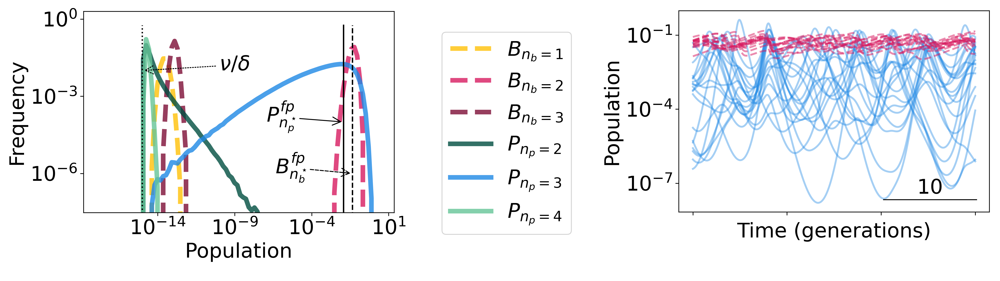

Why do we see bacteria with different phage defense systems coexisting?
Bacteria have evolved many ways to defend themselves against the viruses that infect them ("phage"). In fact, most bacteria carry many (>10) of these defense systems simultaneously, even though each system carries a growth cost to the bacteria. Similarly, phage have evolved many counter-defenses to evade these bacterial defense systems, which also carry a cost for the phage. This arms race between phage and bacteria poses several puzzling questions. First, what determines the number of defense/counter-defense systems carried by each individual bacteria or phage strain? Second, despite the many bacterial defenses and phage counterdefenses, in most environments, bacteria and phage coexist, with neither driving the other to extinction. How is this coexistence realized in the context of the phage/bacteria arms race?
We designed a mathematical model to consider a community of bacterial strains with different combinations of defense systems and of phage strains with different counter-defense system combinations. We performed two types of analysis on this model. First, by analytically solving a simple (highly symmetric) instantiation of this model, we found that the stable state of the system exhibits a high degree of coexistence. Furthermore, the state we found analytically agreed with the experimental observation that each individual bacterium carries multiple defense systems (though fewer than the maximum possible), and similarly for phage.
Second, we performed numerical simulations for more general systems, breaking symmetries that we needed to impose for our pencil-and-paper calculations. In these simulations, we saw that the system did not evolve to a fixed point; rather, phage and bacterial populations continue to change dynamically with irregular (chaotic) dynamics. These chaotic dynamics allow many more phage strains to coexist at the same time than would be possible otherwise. We were able to show that many of the dynamic properties of these chaotic population trajectories could be predicted from simple formulas.
Our results suggest that even in the context of explicit bacterial defenses and phage counter-defenses, coexistence between phage and bacteria can arise naturally. Furthermore, even though the nature of this coexistence is dynamic and chaotic, understanding many of its properties may not require detailed analysis of particular events. Rather, considering states of evolutionary stability (and fluctuations around them) may provide a helpful guiding perspective.